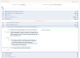
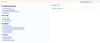

Kunagi is a software project management tool based on the agile framework Scrum. It is designed for distributed teams of pragmatic people, which need tight collaboration to build a complex product the agile way. Kunagi is free.
Online demo
Take a closer look at Kunagi by trying the online demo. It is preconfigured with example projects.
Features
Post Comments on every entity. Get informed of other peoples comments on the project journal.
 Edit Stories directly in the Product Backlog and prioritize them by drag'n'drop. Project the volume of future releases by adjusting assumed velocity. Play Planning Poker in the backlog to estimate User Stories.
 The integrated Wiki provides space for custom documents. Pages can be downloaded as PDF. All description fields (Stories, Tasks, Impediments,...) are based on the Wiki-Syntax which is similar to the MediaWiki-Syntax.
Use a pragmatic approach to Risk Management. Document project risks and prioritize them by impact and probability. Then document plans for mitigation.